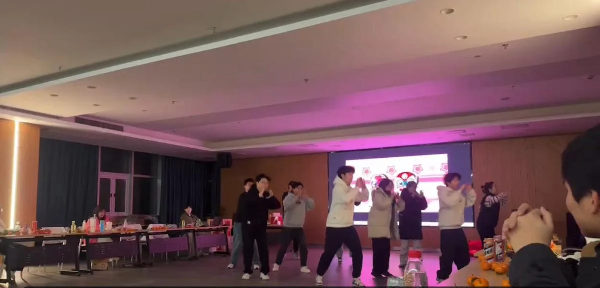
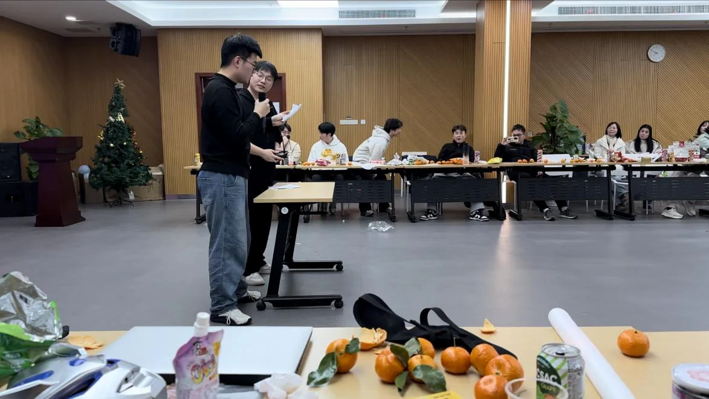
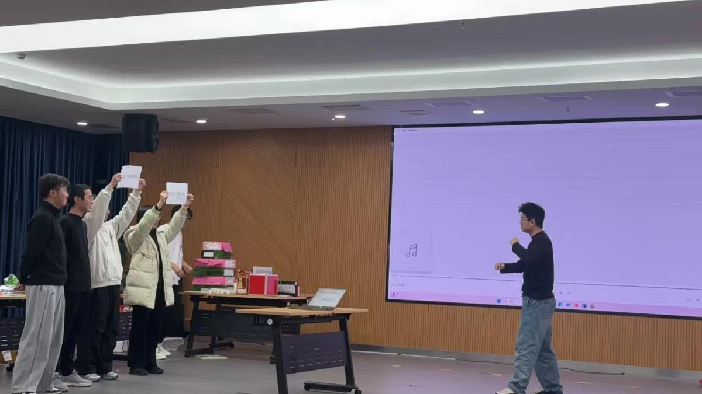
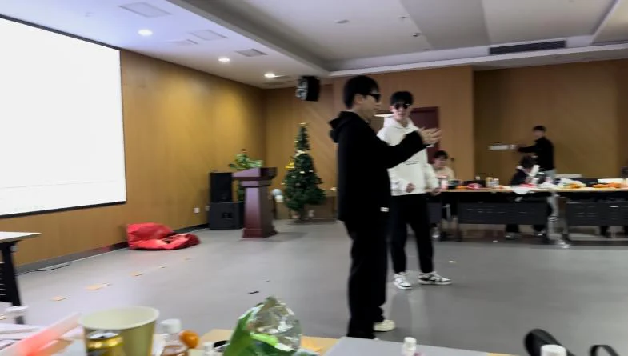
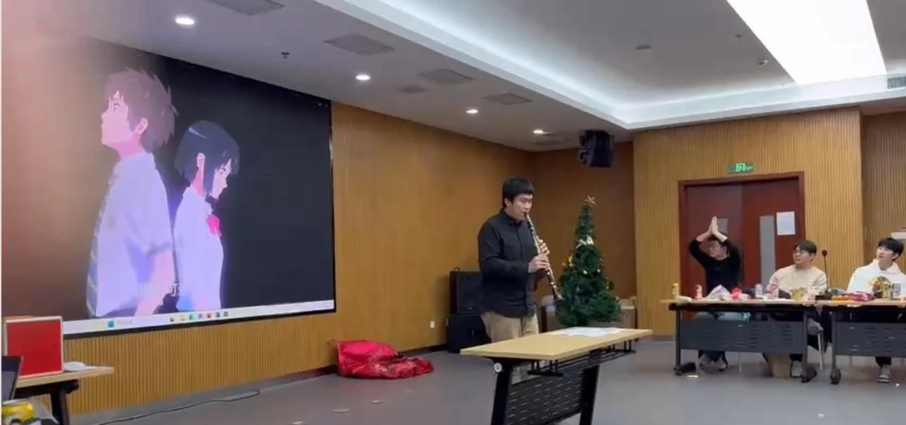
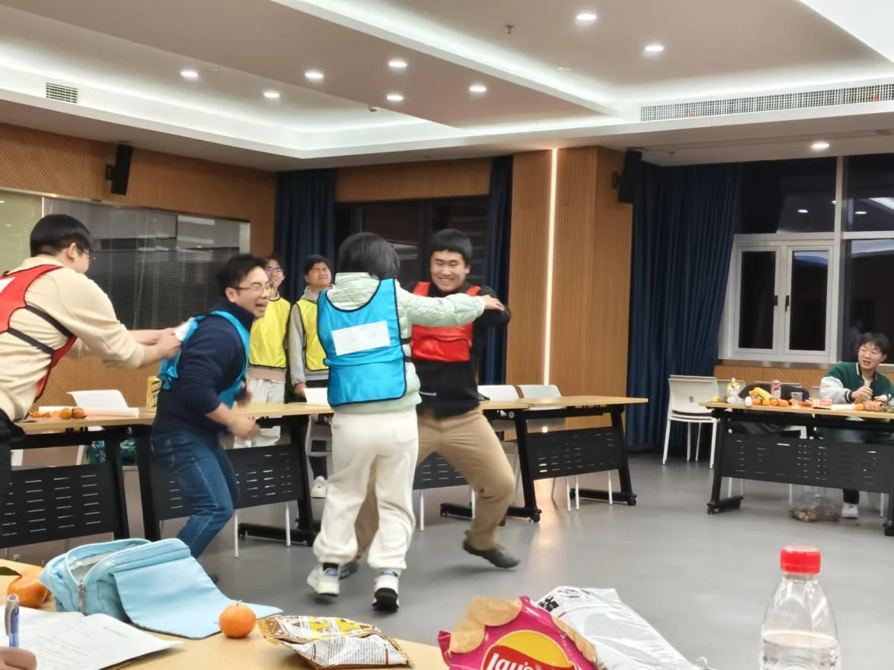
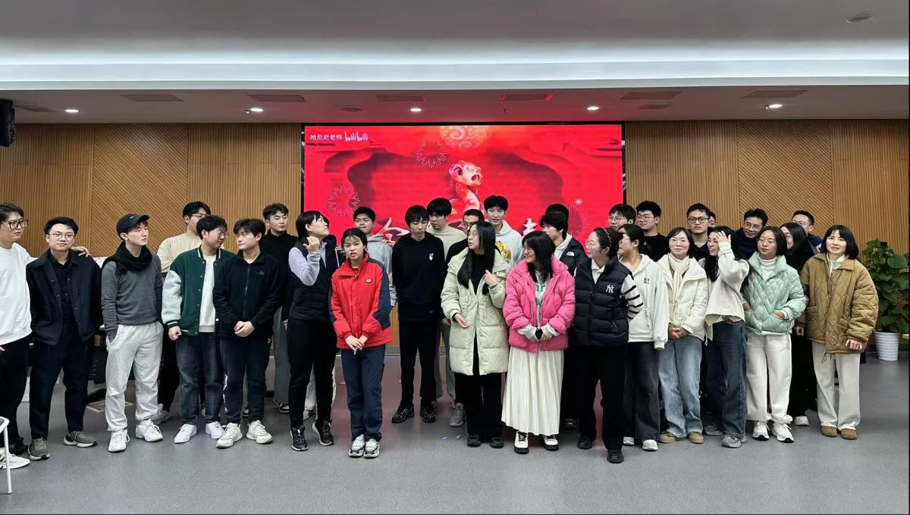

随着2024年元旦的脚步越来越近，iMED团队的成员们满怀期待地准备着一场特别的庆祝活动。12月30日，这个特别的日子，我们选择了在4009号房间这个温馨的空间里，共同迎接新年的到来。夜幕降临，房间内灯光柔和，装饰着节日的彩带和气球，营造出一种欢快而温馨的氛围。随着音乐的响起，蒋舒畅、李颖颖、王万波、宋敖楠、胡肖扬、李宏硕、袁磊磊、廖炜城、杨帅华、周诗佳、张元迪和张明恩这十二位充满活力的成员以一段精心编排的舞蹈串烧《奇迹再现+猪猪侠+开心超人》作为开场，瞬间点燃了现场的气氛。

随着舞蹈的进行，观众们也被这股热情所感染，纷纷加入到庆祝的行列中。舞蹈结束后，掌声和欢呼声此起彼伏，为这场晚会拉开了一个完美的序幕。随后，成员们准备了丰富多彩的节目，每个人都用自己的方式表达着对新年的祝福和期待。
晚会中，游戏环节成为了互动的亮点。在《Undead Funeral March》的背景音乐下，团队成员们参与了“接力大作战”，展现了团队协作的精神。随后的“风吹草动”和“抢水瓶”游戏，更是让现场笑声不断，气氛热烈。“几只猴嘿嘿嘿”和“穿裤子”等游戏，不仅考验了参与者的反应能力，也带来了无尽的欢乐。
在游戏的间隙，IMED团队还准备了精彩的节目表演。小品《组会来了》以其幽默诙谐的表演赢得了观众的阵阵掌声。多人合唱《当》和双人相声《搞科研》等节目，展现了团队成员们的多才多艺。管乐独奏和尬舞《猛男新宝岛》更是将晚会推向了高潮，赢得了满堂彩。
晚会的最后，以一首《突然的自我》双人合唱和“看图猜台词”游戏作为压轴。




最印象深刻的还属郭哥带来的乐器演奏，演奏结束时，全场爆发出雷鸣般的掌声。郭哥的乐器演奏不仅仅是一场视听盛宴，更是一次心灵的触动。他的音乐让每个人都感受到了团队的温暖和新年的希望。

晚会中还穿插了互动游戏，让每个人都能参与其中，享受节日的快乐。
好戏看不完，大奖抽不断，终于来到最后激动人心的抽奖环节，IMED为大家精心准备了各种精美的小礼物，鼠标、键盘、红包、雨伞等。

在这个特别的夜晚，IMED的成员们不仅展现了他们的才华和热情，更重要的是，他们通过这次活动加深了彼此之间的友谊，共同创造了一个难忘的元旦记忆。愿每一个幸运儿都在新的一年里好运加持，论文多多。这个元旦，让我们陪你一起度过，IMED祝大家新年快乐！